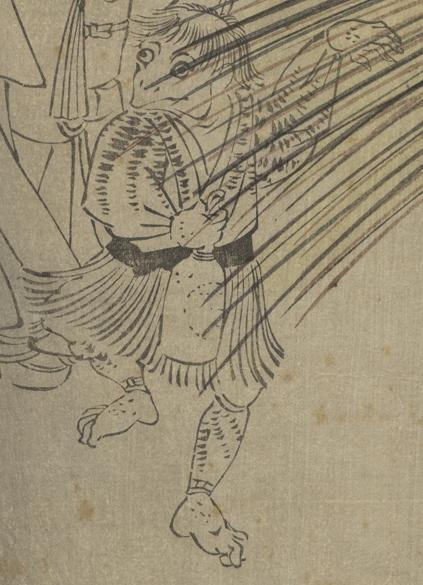

← 图鉴索引

上着を着て腰蓑を着けた河童が、酒瓶を持って踊っている。
著作者：香朝樓豊齋・福田初次郎／出典：親書誌：U426_nichibunken_0436：歌舞伎𢉰一月興行／日付：2017／資源識別子：U426_nichibunken_0436_0002_0001
Copyright (c)2010- International Research Center for Japanese Studies, Kyoto, Japan. All rights reserved.